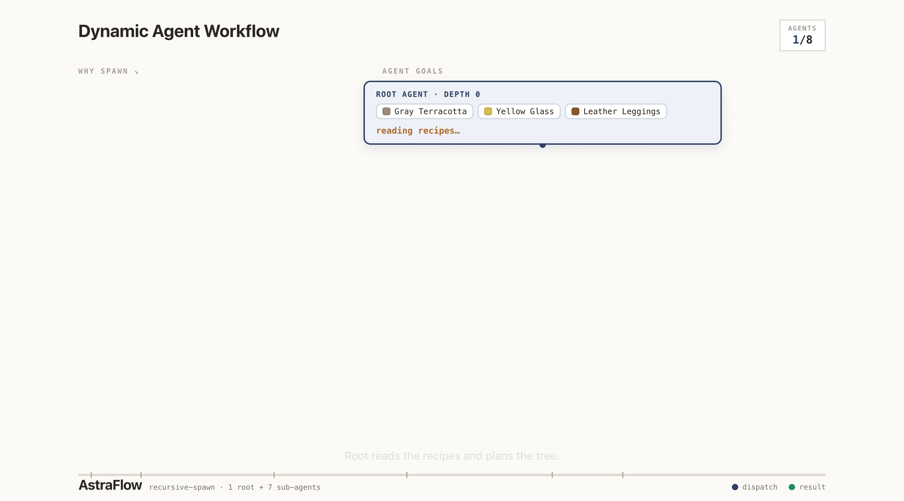
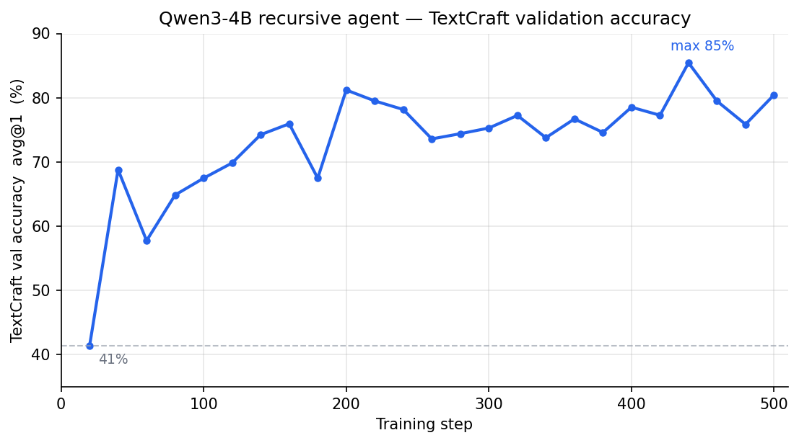

TextCraft (Recursive Agent)#
A multi-turn recursive-agent recipe on TextCraft, reproducing the design from Recursive Agent Optimization (Gandhi et al., 2026). The agent acts in a stateful crafting environment (Minecraft-style recipes + inventory) and can recursively spawn up to 4 sub-agents in parallel per turn — each shares the parent’s inventory by reference, so their work mutates the same state.
{kind=link}

Recipe: examples/textcraft-recursive-agent/qwen3-4b-recursive/
Workflow class: astraflow/core/workflow/impl/textcraft/workflow.py — registered as recursive_agent.
Results#
Validation accuracy (eval-avg/textcraft_val/avg@1) over a 500-step run.
Starting from the base Qwen3-4B-Instruct-2507, the recursive agent climbs
from ~41% at the first eval (step 20) to ~80% by step 500, peaking
at 85% around step 440 — the team-reward broadcast and shared-inventory
spawning are enough to learn the multi-turn crafting policy with no SFT
bootstrap.
{kind=link}

Run#
One-time prep (synthesizes 1000 train + 100 val tasks locally from the bundled recipe DB; no network required):
# Generated automatically on first launch; or force-regenerate:
python -c "from astraflow.dataflow.dataset.textcraft import download_dataset; download_dataset()"
Pre-fetch the model (one-time, ~8 GB):
huggingface-cli download Qwen/Qwen3-4B-Instruct-2507
Run:
bash examples/textcraft-recursive-agent/qwen3-4b-recursive/scripts/run_qwen3-4b-recursive.sh
How it works#
Tool-call protocol#
Each turn the model emits exactly one action block:
<action type="get_info">{"items": ["stick", "oak_planks"]}</action>
<action type="view_inventory">{}</action>
<action type="craft">{"ingredients": {"oak_log": 1}, "target": ["oak_planks", 4]}</action>
<action type="spawn">{"subtasks": [
{"targets": {"oak_planks": 16}, "max_steps": 8},
{"targets": {"stick": 8}, "max_steps": 5}
]}</action>
<action type="finish">{"message": "crafted 4 wooden_pickaxe"}</action>
We use an XML/JSON action surface (rather than executable code) because
SGLang runs with --skip-tokenizer-init (can’t do string-stop) and we
want zero sandbox infrastructure. Base Qwen3 reads the format from the
system prompt with no SFT bootstrap needed.
Stateful environment#
TextCraftEnv
holds a mutable inventory: dict[str, int] and a shared read-only
recipe database (~860 Minecraft recipes bundled in
astraflow/core/workflow/impl/textcraft/recipes/).
env.fork(child_task) returns a child env whose inventory is the
same dict object as the parent’s. When a sub-agent calls craft, the
mutation is visible to the parent. Single asyncio loop → no race.
Spawning#
A <action type="spawn"> block runs all subtasks in parallel via
asyncio.gather, each as a full sub-episode with its own forked env
and trajectory. Up to 4 children per spawn, up to depth 3 (root + 2
levels of nesting). Sub-agents share the root’s step budget.
Aggregation — finish-message only#
The parent’s view of a spawn is bounded — only each child’s
finish_message:
<spawn_result>
<sub_agent_0 task="craft 16 oak_planks">crafted 16 oak_planks</sub_agent_0>
<sub_agent_1 task="craft 8 stick">crafted 8 stick</sub_agent_1>
</spawn_result>
The sub-agent’s intermediate turns (other craft / get_info calls)
are NOT shown to the parent. This forces sub-agents to summarize their
work in finish messages and bounds context growth across recursion.
Settings#
Setting |
Value |
|---|---|
Model |
Qwen/Qwen3-4B-Instruct-2507 |
|
|
Algorithm |
M2PO |
Fine-tuning |
Full-FT |
Inference backend |
SGLang + RaaS + AstraFlow |
Tool-call protocol |
XML / JSON |
|
8 train / 1 eval |
|
512 |
|
50 |
|
3e-6 |
Adam (β₁, β₂) |
(0.9, 0.95) |
|
0 (off) |
|
8 |
|
1000 |
Eval cadence |
every 20 steps |
|
3 (safety cap) |
|
4 (safety cap) |
|
8 (bounds K^N RaaS queue blowup) |
|
0.0 |
|
false |
Dataset |
TextCraft 1000 train / 100 val (original Minecraft recipes) |
SGLang context_length |
32768 (bumped from math recipe’s 16k for recursion overhead) |
Reference#
Gandhi, Chakraborty, Wang, Kumar, Neubig. Recursive Agent Optimization. arXiv:2605.06639, 2026. https://arxiv.org/abs/2605.06639